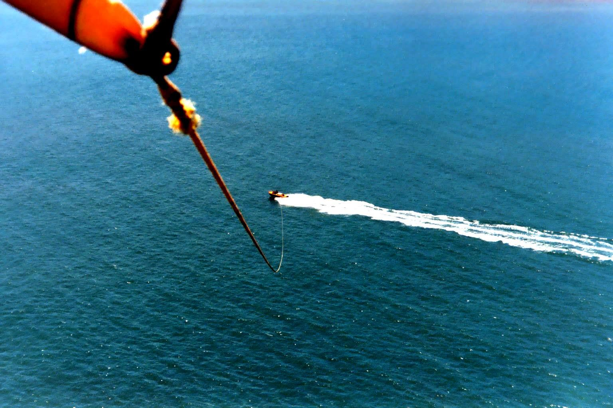
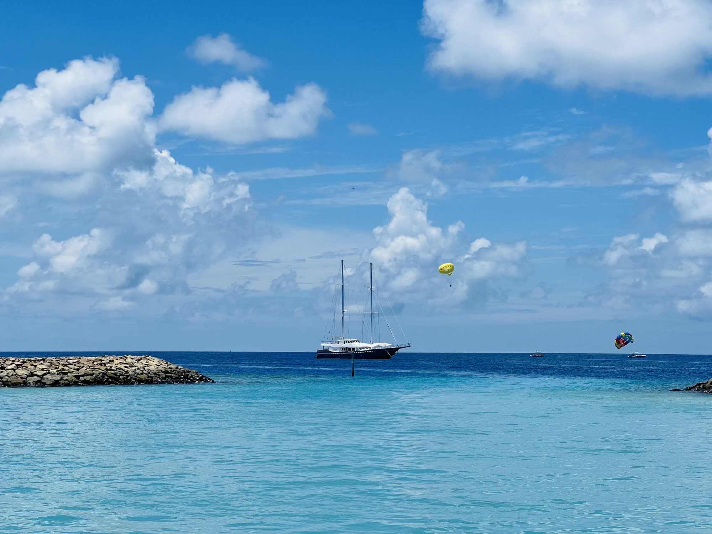
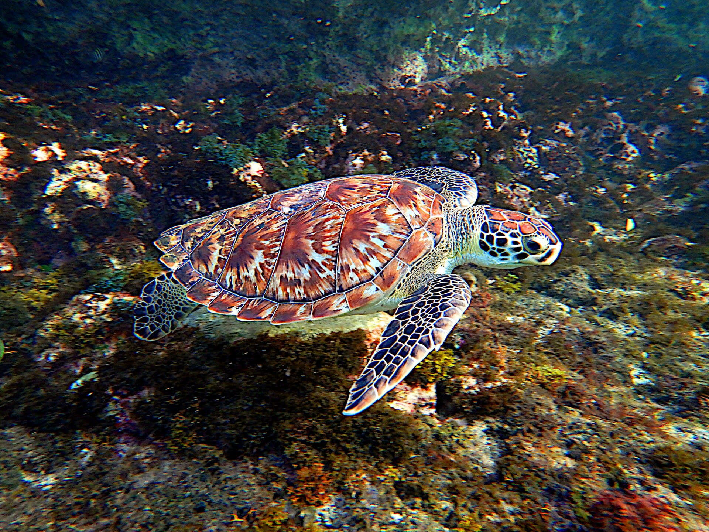

We pick you up on the sand
The boat comes to you: free pickup from resorts, villas and public access points along Grace Bay Beach, or meet us at the dock in Turtle Cove Marina. About an hour and a half, door to door.

Twelve minutes of quiet, turquoise and nothing beneath your feet. You lift off the back of the boat and land back on it, dry if you like. Flying from Turtle Cove since 1991.
400,000+
safe flights
35+ yrs
Captain Marvin Pratt, since 1991
4.6/5
from 250+ reviews on TripAdvisor & Google
Free
pickup on Grace Bay Beach
The boat comes to you: free pickup from resorts, villas and public access points along Grace Bay Beach, or meet us at the dock in Turtle Cove Marina. About an hour and a half, door to door.
Life jacket, harness, a quick word from the crew. No swimming, no running start, no experience. Our rule has always been simple: if you can sit, you can fly.
The line pays out and the boat falls away beneath you. Single, tandem with someone you love, or three across. It is gentler than people expect, and much quieter.
Twelve to fifteen minutes up there. Grace Bay laid out in every blue it owns, the reef line, the cays, and if you're lucky a turtle surfacing below your toes.
On the way down, dip your feet in the bay or land back on the deck completely dry. Your call.
Pick your flightAll prices in US dollars, plus 12% government tax. Tips not included. Free cancellation up to 24 hours before.
$90 per flyer
$80 on any flight before 10am
$950 the whole boat
$1,800 two hours
$25 observer
The whole boat ride without flying, when there's space. Flyers get first priority.

13 months
Our youngest flyer so far. Kids fly tandem with an adult, so the whole family goes up.
Two 28-foot custom boats, USCG-certified for 12 passengers, and a 31-foot Ocean Pro built for parasailing.
We never fly in unsafe conditions. If the weather says no, we reschedule you or refund you in full. Guests write about it in their reviews.
Captain Marvin Pratt started flying guests over Grace Bay in 1991. Independently owned, and based only here in Providenciales.

What guests mention most after landing: the crew, the colour of the water, and the turtles.
No. You take off from and land on the boat's flight deck, and you wear a life jacket the whole time.
Most people are surprised how calm it is. The ride up is smooth and it's very quiet at 450 feet. If you can sit, you can fly.
Beachwear if you want the splash on the way down. Otherwise casual clothes are fine; you can land completely dry.
Minimum 100 lbs per flight, which is why children fly tandem with an adult. Tandem flights carry up to 450 lbs combined. Whether you fly single, tandem or triple depends on the wind and your combined weight, and the captain makes the final call on the day.
One to two days is usually enough. From December to April and around holidays, book earlier. Private charters reserve the whole boat.
Yes, as observers for $25 each when there's room on the boat. Flyers get priority, so book the flyers first.

From $80 before 10am
Book